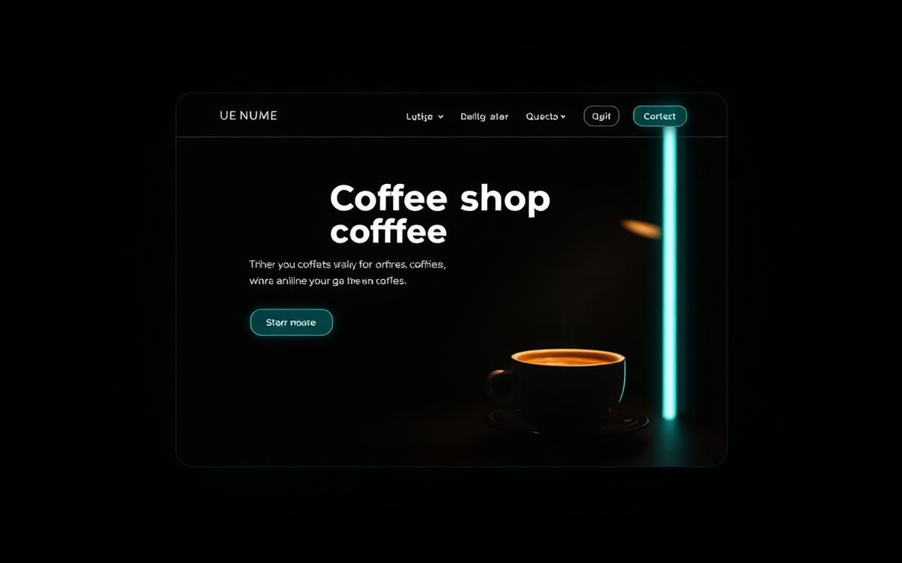
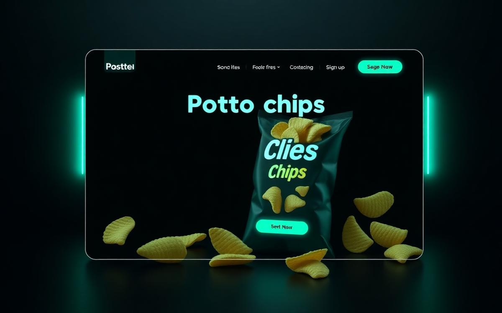
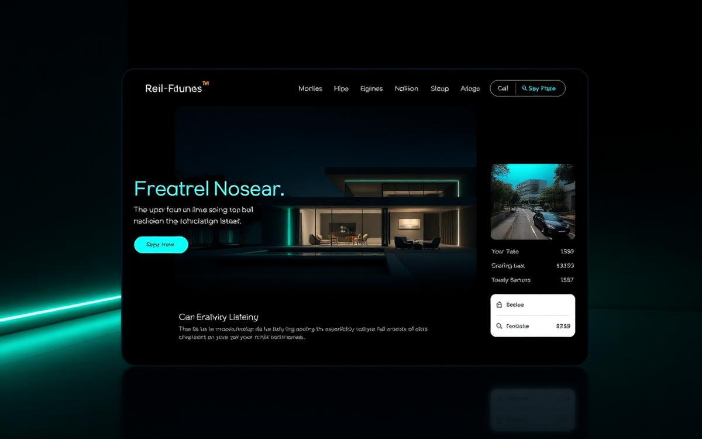

Custom Website

Fried Chicken Website
Crispy design, just like fried chicken — a modern restaurant website built from scratch with a bold, appetite-driven layout.
Portfolio
Client and practice builds across custom development, WordPress and design — plus a set of cybersecurity learning labs run in controlled environments.
Crispy design, just like fried chicken — a modern restaurant website built from scratch with a bold, appetite-driven layout.

Clean and modern travel agency website with strong imagery, clear sections and a fully responsive layout.

Coffee shop website with a warm, minimal aesthetic and smooth section transitions.

WordPress site for a food brand — fresh look, smooth layout and a mobile-friendly experience.

Modern NFT website designed on WordPress — clean UI, fast performance and fully responsive, made for digital creators.

Clean, professional real-estate site that makes buying and selling easier — fast, user-friendly and mobile-ready.
Capturing and analysing network traffic with Wireshark to understand protocols, handshakes and request flow in a controlled environment.
Educational lab — add your write-up link here.
Learning host discovery and service enumeration with Nmap against authorised lab machines I own.
Educational lab — add your write-up link here.
Studying common web security concepts from OWASP guidance using intentionally vulnerable local test applications.
Educational lab — add your write-up link here.
Working with Linux command-line tools, permissions, networking and security fundamentals inside Kali and Ubuntu virtual machines.
Educational lab — add your write-up link here.
I'm available for freelance work — custom builds, WordPress or a full redesign.